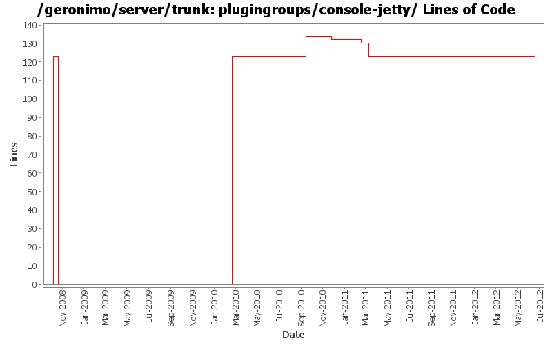

[root]/plugingroups/console-jetty
 src
(0 files, 0 lines)
src
(0 files, 0 lines)
 main
(0 files, 0 lines)
main
(0 files, 0 lines)
 history
(1 files, 44 lines)
history
(1 files, 44 lines)

| Author | Changes | Lines of Code | Lines per Change |
|---|---|---|---|
| Totals | 15 (100.0%) | 295 (100.0%) | 19.6 |
| linsun | 2 (13.3%) | 123 (41.7%) | 61.5 |
| dwoods | 1 (6.7%) | 123 (41.7%) | 123.0 |
| rwonly | 6 (40.0%) | 24 (8.1%) | 4.0 |
| djencks | 1 (6.7%) | 10 (3.4%) | 10.0 |
| xiaming | 2 (13.3%) | 7 (2.4%) | 3.5 |
| genspring | 1 (6.7%) | 6 (2.0%) | 6.0 |
| rickmcguire | 2 (13.3%) | 2 (0.7%) | 1.0 |
Update trunk version to 4.0.0-SNAPSHOT
1 lines of code changed in 1 file:
GERONIMO-5859 Reenable JMS related portlets, patch from Shenghao Fang
6 lines of code changed in 1 file:
GERONIMO-5847 remove the old Dojo based osgi console, the new pure html based one is in the base portlets.
0 lines of code changed in 1 file:
GERONIMO-5598 reenable debug view portlet, patch provided by Shenghao Fang
6 lines of code changed in 1 file:
GERONIMO-5597 Reenable database-related admin console portlets (thanks Fang Sheng Hao for the patch!)
0 lines of code changed in 1 file:
[maven-release-plugin] prepare release 3.0-M2
1 lines of code changed in 1 file:
[maven-release-plugin] prepare branch 3.0-M2
1 lines of code changed in 1 file:
GERONIMO-5600 Reenable EJB server admin console portlets (Thanks Shenghao for the patch!)
6 lines of code changed in 1 file:
GERONIMO-5502 Add OSGI management portlets
0 lines of code changed in 1 file:
stop assemble sysdb console with server.
2 lines of code changed in 1 file:
GERONIMO-5597 make system db portlets compile with server
16 lines of code changed in 1 file:
GERONIMO-5290 fix many of the deprecation warnings from maven 3
10 lines of code changed in 1 file:
move console plugins to new console plugin groups
123 lines of code changed in 1 file:
GERONIMO-4371 remove unnecessary plugin groups
0 lines of code changed in 1 file:
Add the console-jetty plugin group
123 lines of code changed in 1 file: